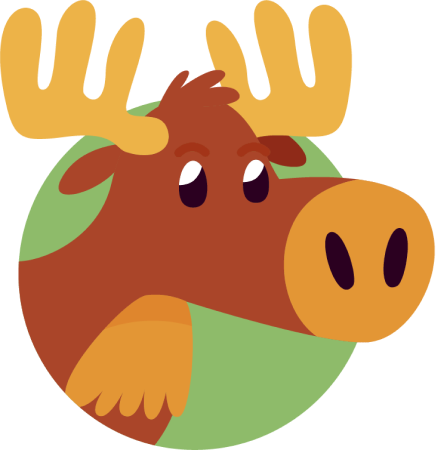
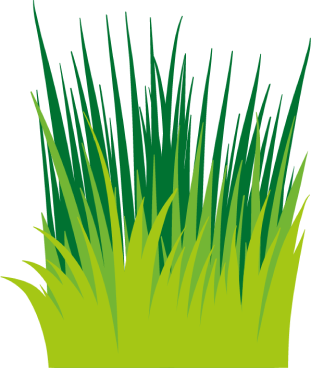

Es una criatura imponente que habita en regiones boscosas del hemisferio norte.
Hábitat: Prefieren vivir en áreas boscosas y regiones cercanas a cuerpos de agua, como lagos y arroyos.


Dieta: Este majestuoso herbívoro se alimenta principalmente de hojas, ramas y cortezas de árboles, en invierno buscan alimentos en zonas bajas.
Características Físicas: Estos ostentan cuernos ramificados llamadas astas, su pelaje espeso y denso color marron y patas largas y fuertes.